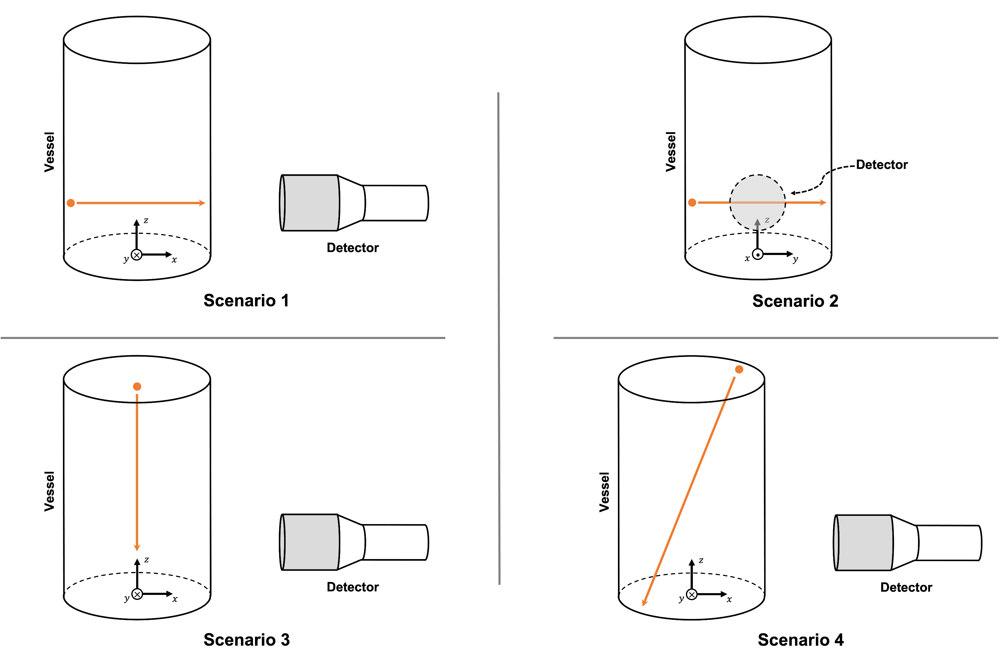
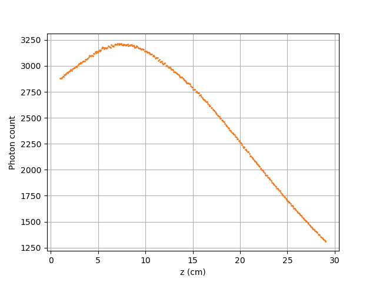
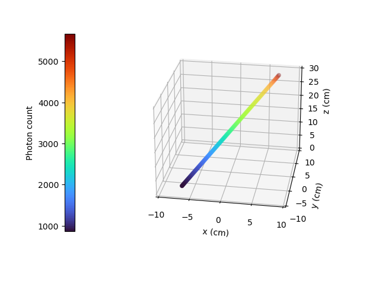

Photon Count Calculation in a Cylindrical Vessel#
In this example, using a Monte Carlo technique, we perform the calculation of photon counts of a single radioactive particle that emits \(\gamma\)-rays. The calculation is performed for a given set of positions inside a cylindrical vessel. The Monte Carlo method allows us to estimate the photon counts of a particle at a given position inside the vessel with respect to a given detector [1] [2].
Features#
Solver:
lethe-rpt-3dDisplays the use of the Monte Carlo method in the calculation of photon count
Files Used in This Example#
All files mentioned below are located in the example’s folder (examples/rpt/count-calculation).
File containing detector positions:
positions.detectorFile containing particle positions for the first scenario:
positions-horizontalx.particleFile containing particle positions for the second scenario
positions-horizontaly.particleFile containing particle positions for the third scenario:
positions-vertical.particleFile containing particle positions for the fourth scenario:
positions-diagonal.particleParameter file:
rpt-count-calculation.prmPostprocessing Python script:
rpt_count-calculation_plot.py
Description of the Case#
In this example, four different sets of particle positions are studied for a given detector position. The four different scenarios studied in this example are:
Horizontal translation of a particle along the x-axis
Horizontal translation of a particle along the y-axis
Vertical translation of a particle along the z-axis
Particle going across the vessel on a diagonal line
The illustration below depicts the geometry of the vessel, the detector, and the path traveled by the particle for each scenario:
As a particle travels in the cylindrical vessel, its photon count (\(C\)) measured by the detector varies according to the following relation:
where
\(T\) is the sampling time (\(s\));
\(\nu\) is the number of \(\gamma\)-rays emitted by each disintegration;
\(R\) is the activity of the tracer (\(Beq\));
\(\phi\) is the peak-to-total ratio;
\(\tau\) is the dead time of the detector (\(s\));
\(\mathbf{X}\) is the tracer particle’s position, and
\(\xi_i(\mathbf{X})\) is the efficiency of the \(i_{th}\) detector related to the position \(\mathbf{X}\).
The efficiency of the detector may be expressed by means of the following equation:
where
\(\Omega\) is the closed exposed surface of the detector;
\(\mathbf{r}\) is a vector going from the position of the tracer particle (\(\mathbf{X}\)) to a variable point (\(\mathbf{P}\)) on the exposed surface of the detector;
\(d\mathbf{A}\) is the external surface vector normal to the surface at the contact point on the detector’s crystal;
\(f_a(\alpha, \theta)\) is the probability function of the non-interaction between the \(\gamma\)-rays emitted within \(\Omega\) and the material inside the vessel, and
\(f_d(\alpha, \theta)\) is the probability function of the interaction of the \(\gamma\)-rays with the detector.
The two last functions may be re-written the following way:
where \(\mu_r\) is the reactor’s attenuation coefficient and \(e(\alpha, \theta)\) is the length of the path traveled by the photon inside the vessel.
And
where \(\mu_d\) is the detector’s attenuation coefficient and \(d(\alpha,\theta)\) is the length of the path traveled by the photon inside the detector.
Using the Monte Carlo algorithm, we approximate the previous closed surface integral by randomly selecting several thousands of photon path directions.
Thus, the efficiency of the \(i_{th}\) detector is calculated as follows:
where
\(N\) is the number of randomly generated photons;
\(\alpha_j\) and \(\theta_j\) are randomly generated angles that describe the direction of a ray emitted by a tracer particle;
\(\omega(\alpha)\) is the weighting factor associated with the angle \(\alpha\), and
\(\omega(\theta)\) is the weighting factor associated with the angle \(\theta\).
Parameter File#
RPT Parameters#
In the subsection rpt parameters, we define the values of the set of parameters necessary for calculating the counts using the Monte Carlo method. Among these parameters, we have the name of the file which contains a set of different positions of the particle inside the vessel (particle position file), the number of Monte Carlo iterations (monte carlo iteration), the seed that is used to generate a random number (random number seed) and other parameters that describe the studied \(\gamma\)-ray model. We also define the name of the file in which the counts for each position will be exported in with the parameter counts file. These common parameters used for the RPT simulation are described in the RPT Parameters documentation page.
subsection rpt parameters
set particle positions file = positions-horizontalx.particle
set verbosity = verbose
set export counts = true
set counts file = counts_horizontalx.csv
set monte carlo iteration = 100000
set random number seed = 0
set reactor height = 0.3
set reactor radius = 0.1
set peak-to-total ratio = 0.4
set sampling time = 1
set gamma-rays emitted = 2
set attenuation coefficient detector = 21.477
end
Detector Parameters#
In the subsection detector parameters, we specify the file that contains two positions located on the axis of symmetry of the detector. The first point is on the surface facing the vessel (face of the detector), and the second point can be any point located inside the detector. In the current example, the center position of the face is \((0.200, 0, 0.075)\), and the second point on the axis is \((0.238, 0, 0.075)\). We also specify the radius (radius) and the length (length) of the detector. A detailed description of these parameters can be found in the Detector Parameters documentation page.
subsection detector parameters
set detector positions file = positions.detector
set radius = 0.0381
set length = 0.0762
set dead time = 1e-5
set activity = 2e6
set attenuation coefficient reactor = 10
end
Note
The parameters dead time, activity and attenuation coefficient reactor are obtained using the blackbox optimization software NOMAD . The second example Tuning Count Calculation Model Parameters with NOMAD explains how we can obtain the values of these parameters using NOMAD.
Running the Simulation#
Launching the simulation is as simple as specifying the executable name and the parameter file. Assuming that the lethe-rpt-3d executable is within your path, the simulation can be launched by typing:
Lethe will generate a .csv file with the name specified next to the counts file parameter in rpt-count-calculation.prm. The generated .csv file will contain the \((x,y,z)\) coordinates of the particle with its respective photon count measured by a given detector. Each detector is identified by its id number (detector_id). In this example, as we have only one detector, all values in the detector_id column should be \(0\).
Warning
When running the code with different particle position files, don’t forget to change the name of the exporting counts file in rpt-count-calculation.prm so that the previous .csv file isn’t overwritten.
Results and Discussion#
To visualize the data and obtain the figures shown below, a Python script (rpt_count-calculation_plot.py) is provided. When running the script, the name of the .csv file you wish to open and read must be specified as an argument.
Tip
You may use the rpt_count-calculation_plot.py script to plot any other set of data saved in a .csv file format.
Scenario 1: Horizontal Translation of a Particle along the X-Axis#

In the figure shown above, as one would expect, as the particle approaches the detector, the photon count grows. Such evolution may be explained by the efficiency of the detector getting greater as the particle advances toward the detector’s exposed surface. Since the photon’s path length in the vessel decreases, \(f_a(\alpha, \theta)\) increases, and therefore the efficiency gets greater. In addition to that, as the particle approaches the detector, the solid angle gets greater, the product \(\omega(\alpha) \omega(\theta)\) increases, making the efficiency increase also.
Scenario 2: Horizontal Translation of a Particle along the Y-Axis#
Case I: \(\mu_r = 10, \ \mu_d = 21.477\)#
The figure shown above illustrates the photon count of the particle as it travels from the back to the front of the vessel along the y-axis. The Case I figure shows the evolution of the photon count for the system we are currently studying (\(\mu_r = 10, \ \mu_d = 21.477\)). Let’s analyze the resulting plot.
First, a symmetry of photon counts from the center axis of the detector can be seen. Such symmetry should be expected since the detector is symmetrical from its center axis.
Secondly, we can notice that the variation in photon count as the particle travel is quite small. The difference between its maximal and minimal values is approximately \(147\), which is one order of magnitude smaller than the other scenarios. This may mainly be explained by the small variations in the distance between the particle and the detector’s exposed surface. In other words, the lengths of the paths traveled by the photon in the vessel and in the detector vary less than in the other scenarios.
Lastly, as the particle travels across the vessel, we notice fluctuations in the photon count. Starting from the back of the vessel, the photon count decreases rapidly until a local minimal value at approximately \(y = -6\) cm and then increases until a local maximum at \(y = 0\) cm (center of the detector’s face). Then, from the center to the front of the vessel, a mirrored image of the photon count’s evolution can be seen. To understand the fluctuations, let’s look at three other figures (Case II, Case III, and Case IV) while focusing on the first half of the studied domain (\(y \in ]-10, 0]\) cm) since the evolution of the count is symmetrical from \(y = 0\) cm.
Case II: \(\mu_r = 0, \ \mu_d = 1e9\)# |
Case III: \(\mu_r = 0, \ \mu_d = 21.477\)# |
Case IV: \(\mu_r = 10, \ \mu_d = 1e9\)# |
\(e(\alpha, \theta)\) function of \(y\)# |
The Case II figure shows the evolution of the photon count in absence of attenuation due to the medium found inside the vessel and the vessel’s wall, and in the absence of variation of the interaction between the emitted \(\gamma\)-ray and the detector. By setting \(\mu_r = 0\), we set \(f_a(\alpha_j, \theta_j) = 1\). As a consequence, the count becomes independent of the path of the photon inside the vessel. In a similar manner, by setting \(\mu_d = 1e9\), we make \(f_d(\alpha_j, \theta_j)\) tend to \(1\). Consequently, the path traveled by the photon in the detector doesn’t affect the efficiency anymore. Only the weighting factors \(\omega(\alpha)\) and \(\omega(\theta)\) have an influence on the calculated efficiency and photon count \((\xi_i \approx \omega(\alpha) \omega(\theta))\). Therefore, the Case II figure gives us an idea of how the photon count evolves according to the particle’s position respective to the detector’s position disregarding the interactions between the emitted ray and the medium inside the vessel and its walls, and disregarding the interactions between the ray and the detector. We can use this case as a base to understand the interactions that occur in other cases.
The Case III figure depicts the evolution of the photon count in absence of the attenuation due to the medium found inside the vessel and the vessel’s wall. Since we use the same set of positions in all cases, \(\omega(\alpha)\) and \(\omega(\theta)\) remain the same for each given position of the tracer particle. The length of the path traveled by the photon inside the detector should also be the same since the same seed number is used. As seen on the Case III figure, when the particle is aligned with the axis of symmetry of the detector, the photon count reaches a maximum. At that position, the evolution of the product \(\omega(\alpha) \cdot \omega(\theta)\) seen on the Case II figure also reaches a maximum. And the distance \(d(\alpha,\theta)\) reaches a local maximum at that position. On the case III figure, we notice that the inflection points at \(y \approx -5.5\) cm and at \(y \approx -3.7\) cm (not too far from the edge of the detector’s face), seen on the Case II figure, are not present anymore. This means that when \(y \in ]-10, -3.8[\) cm, when the particle sees both the face and the lateral sides of the detector and as the particle approaches the detector’s face, the distance \(d(\alpha,\theta)\) increases making the count increase. And when \(y \in ]-3.8, -1.5[\) cm the distance \(d(\alpha,\theta)\) decreases in such way that it counters the rapid increase in weighting factors giving the evolution of the photon count a more parabolic shape. Finally, between \(y \in ]-1.5, 0]\) cm, \(d(\alpha,\theta)\) increases until reaching a local maximum.
The last case studied (Case IV) shows the evolution of the photon count when \(\mu_d\) is so great that \(f_d(\alpha_j, \theta_j)\) tends to \(1 \ \forall y \in ]-10, 10[\) cm. By doing so, we can see the evolution of the count when the efficiency is independent of the interaction between the emitted \(\gamma\)-ray and the detector. With this case, we isolate the effect of the evolution of \(f_a(\alpha, \theta)\) on the count. More specifically, we’re looking at the evolution of \(e(\alpha,\theta)\) as the particle travels in the vessel, since \(\mu_r\) remains constant in the studied domain. We notice that we have a local minimum at \(y \approx -4.6\) where we saw the convex section on the Case II figure. Considering the Case II results, we can interpret the Case IV figure as follows. Starting from the back of the vessel, where \(f_a(\alpha, \theta)\) is at its maximal value, \(f_a(\alpha, \theta)\) decreases at a decreasing rate until reaching \(y \approx -4.6\) cm. The maximal value of \(f_a(\alpha, \theta)\) (minimal value of \(e(\alpha,\theta)\)) being when the particle is the furthest away from the detector may be explained by the curvature of the vessel’s wall. Since the wall of the vessel is curved to form a circle, the distance traveled by the photon inside the vessel on the average probable path isn’t necessarily larger than the radius of the reactor. We know that at \(y = 0\), \(e(\alpha,\theta) = 10\) cm. In other words, \(e(\alpha,\theta)\) is equivalent to the radius of the reactor. On the \(e(\alpha,\theta)\) function of \(y\) figure, we can read \(e(\alpha,\theta) \approx 10.04\) cm when \(y = 10\) cm. We also know that an increasing distance \(e(\alpha,\theta)\) leads to a decreasing efficiency, which means a decreasing count. Therefore, we may assume that \(e(\alpha,\theta)\) is minimal when \(y \approx -10\) cm or when \(y \approx 10\) cm. And, it slowly increases until reaching \(y \approx -4.6\) cm. When the particle reaches the \(y \approx -4.6\) cm position (local minimum), the variation of \(f_a(\alpha, \theta)\) is so little that \(f_a(\alpha, \theta)\) behaves as a constant. This explains why we see the same pattern of evolution of the photon count as in Case II when \(y \in ]-4.6, -3.8[\) cm. Similarly, when the particle sees only the face of the detector, the pattern of the counts evolution follows the same trend as the one seen on the Case II when \(y \in ]-3.8, 0]\) cm. This also indicates very little fluctuations of \(e(\alpha,\theta)\) as we may see on the \(e(\alpha,\theta)\) function of \(y\) figure. Therefore, the photon count is highly dependent of the weighting factors when \(y \in ]-3.8, 0]\) cm.
Coming back to the Case I figure, we can see that photon count follows a pattern similar to the one seen in Case IV. We may interpret from it that \(f_d(\alpha, \theta)\) varies very little as opposed to \(f_a(\alpha, \theta)\) that fluctuates greatly. The local minimal values, in this case, are at \(y \approx -6\) cm and \(y \approx 6\) cm, as opposed to \(y \approx -4.6\) cm and \(y \approx -4.6\) cm for the fourth case. This is due to the change in the value of \(\mu_d\). \(f_d(\alpha,\theta)\) function of \(y\) increases at a slower rate, making the minimums further way from the center. To summarize, the fluctuations seen in the Case I figure is the result of the combined influence of the values of the attenuation coefficients, the variation of the path lengths of the photon in the vessel and the detector, and the evolution of the weighting factors.
Scenario 3: Vertical Translation of a Particle along the Z-Axis#
Similar to the first scenario, as the particle approaches the detector, we notice an increase in photon count. The photon count reaches its maximal value at around \(z = 7.1\) cm, which is close to the center of the detector’s face.
Scenario 4: Particle Going across the Vessel on a Diagonal Line#
After analyzing the past three scenarios, we get much-expected results for this scenario. As seen in the first scenario, the photon count varies greatly with the \(x\) coordinate of the position vector of the particle. That is because the path of the photon inside the vessel gets longer when \(x\) gets smaller. In other words, the ray is more attenuated by the material inside the vessel before getting to the detector, therefore the photon count gets smaller. Consequently, even though the particle is further away from the detector if the \(x\) coordinate of the tracer’s position is closer to the detector’s exposed surface, the photon count could get greater and that’s what we see on the figure above for high \(z\) values.
Sensitivity Analysis of the Monte Carlo Method#
Looking back at the second scenario’s results (Case A), we notice that the counts are a little scattered. This is caused by the stochastic nature of the Monte Carlo method. Increasing the number of Monte Carlo iterations (\(N\)), generates much smoother results as seen in the Case C figure where we have multiplied \(N\) by a factor of \(10\). By increasing \(N\), we’re covering more of the solid angle, making the simulation more representative of the physical system. Therefore, we see a better continuity in the photon counts. In the Case B figure, \(N\) was divided by a factor of \(10\). As expected, in this figure, we see much more scattering.
{kind=link}